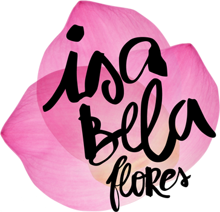
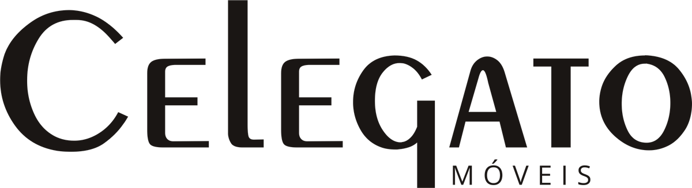

Espetáculo cênico-musical
As Histórias
do Theatro
um palco e suas memórias
Sexta, 2 de outubro · 19h30
Theatro Municipal de São João da Boa Vista
Praça da Catedral, 22 · Entrada franca
O programa
- 01
- 02
Primeira conversa: como a cidade ganhou um teatro
Antônio Carlos Lorette · Neusa Menezes
- 03
Trecho do documentário Música & Drama
“Cine Theatro”
- 04
Segunda conversa: quando o palco virou tela
José Marcondes · Maria Célia Marcondes
- 05
“O mundo todo é um palco”
Ronaldo Marin
- 06
Terceira conversa: como o prédio foi salvo
José Márcio Carioca · Fafá Noronha · Vânia Noronha
- 07
“O Sole Mio”
Vânia Noronha, piano · Julia Paiva, violino
- 08
Esquete “Esperando Guiomar”
Helena Gonçalves
- 09
Homenagem a Guiomar Novaes — Scherzo nº 2 de Chopin
Cláudio Richerme, piano · Zabella Dragão, balé
Duração: 130 minutos, sem intervalo
Produção
Apoio

